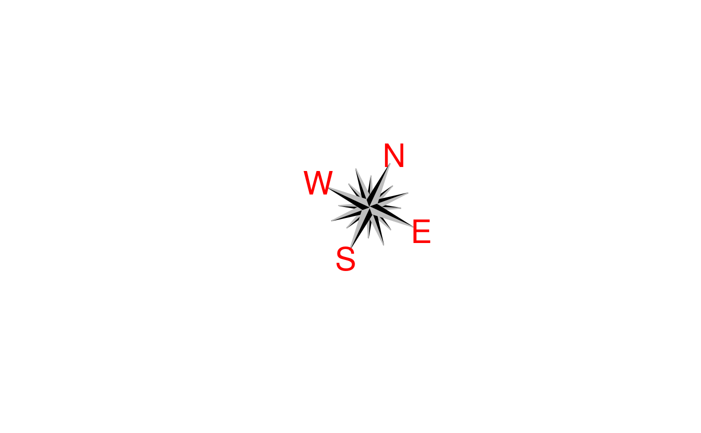

This function draws a fully personnalisable compass rose.
compassRose( x = 0, y = 0, labels = c("S", "W", "N", "E"), rot = 0, cex.cr = 1, cex.let = cex.cr, col.cr = c(1, 8), col.let = 1, border = c(1, 8), offset = 1.2, add = TRUE, ... ) compassRoseCardinal( x, y = x, rot = 0, cex.cr = 1, cex.let = 1, labels = c("S", "W", "N", "E"), offset = 1.2, col.cr = c(1, 8), col.let = 1, border = c(1, 8), ... )
| x | the x coordinates of the center of the compass rose. |
|---|---|
| y | the y coordinates of the center of the compass rose. |
| labels | a vector of four character strings used as labels for the cardinal directions. |
| rot | rotation for the compass rose in degrees (clockwise). |
| cex.cr | the magnification to be used for the whole compass rose. |
| cex.let | the magnification to be used for labels. |
| col.cr | a vector of colors used to draw compass rose (see details). |
| col.let | a character string specifying the labels' color. |
| border | a vector of colors of the borders of the compass rose. |
| offset | label offset of the cardinal points. |
| add | a logical. Should the compass rose be added on the current graph? |
| ... | additional arguments to be passed to |
Both col.cr and border are repeated over (base::rep()
is called) so it has a 8 elements, meaning all triangles the compass rose is
made of could have their own color.
Note that there already exists a similar function by Jim Lemon in sp package.
compassRose: A compass rose with the four cardinal directions and additional directions.
compassRoseCardinal: A compass with the four cardinal directions only.
compassRose(0, rot=25, cex.cr = 2, col.let =2, add = FALSE)